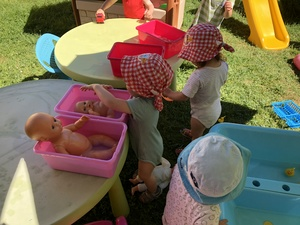
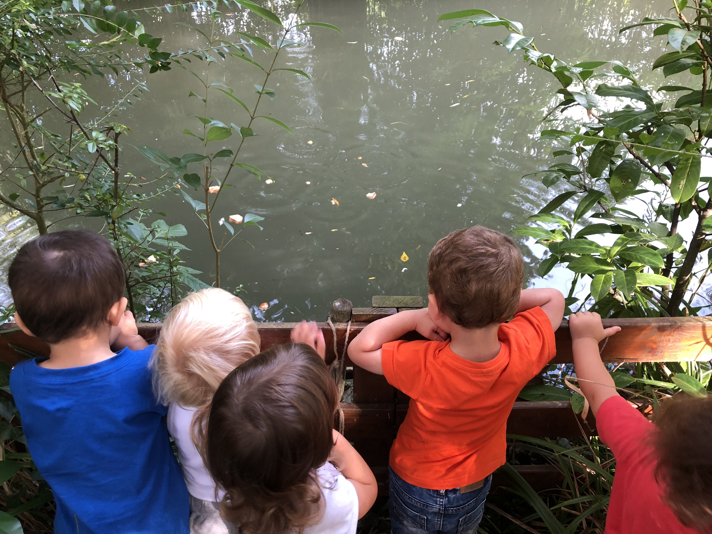
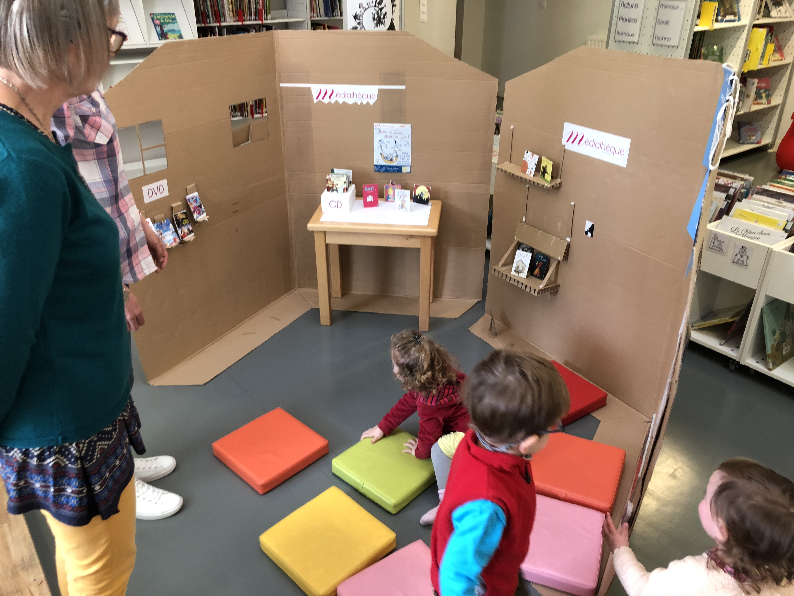
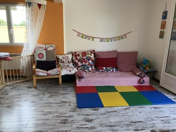
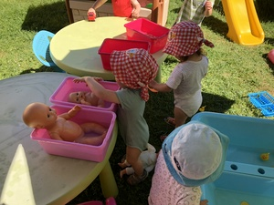
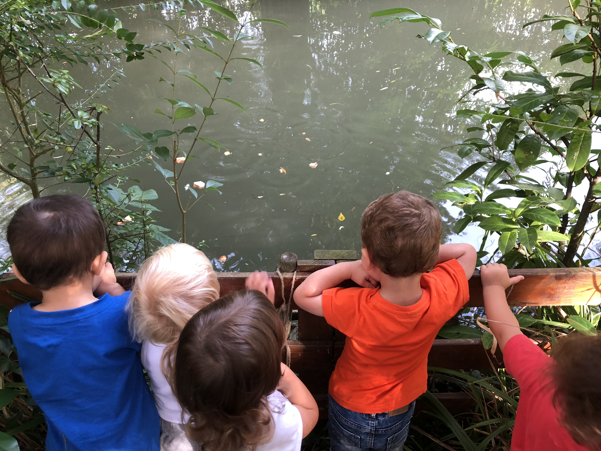
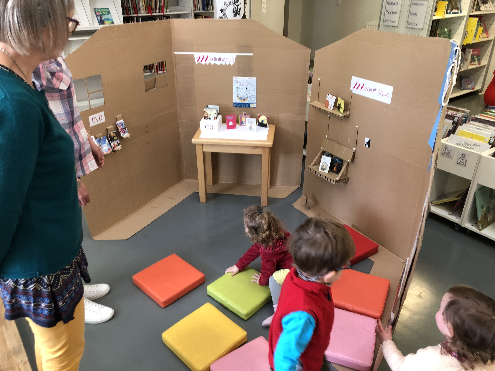
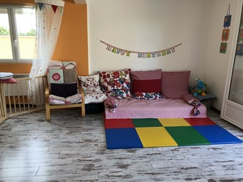

Bienvenue
Parents et futurs parents, bienvenue au
sein de la Mam — Les p'tits coquelicots
Qui sommes-nous ?
Nous sommes deux assistantes maternelles agréées dynamiques et expérimentées.
Parallèlement à notre profession et en relation avec celle-ci nous avons participé à l'écriture d'un chapitre du livre « Créer une maison d'assistantes maternelles » aux éditions Philippe Duval, ainsi que deux articles dans le magazine « Assistantes maternelles magazine ». Régulièrement, certaines activités sont proposées et publiées dans le magazine.
Notre Mam est le fruit d'un regroupement de deux assistantes maternelles travaillant en équipe dans un local pensé et aménagé pour l'accueil des enfants. Il n'y a pas de hiérarchie, chacune est responsable du bon fonctionnement de la Mam et reste bienveillante envers sa collègue.
Nous sommes soucieuses de faire évoluer notre profession et nos connaissances, c'est pourquoi nous avons et suivons régulièrement des formations sur notre temps libre.

Un aperçu de la Mam
La Mam vibre de nombreuses et diverses activités tout au long de l'année.
Nous nous rendons mensuellement à la médiathèque où nous sommes accueillis pour des moments de lecture. Une bénévole de l'association « Lire et faire lire » vient à la Mam lire des livres. Nous jardinons en partenariat avec un couple de retraités. Enfin nous ponctuons l'année de diverses fêtes avec les enfants accueillis et parfois aussi avec leurs parents.
 






